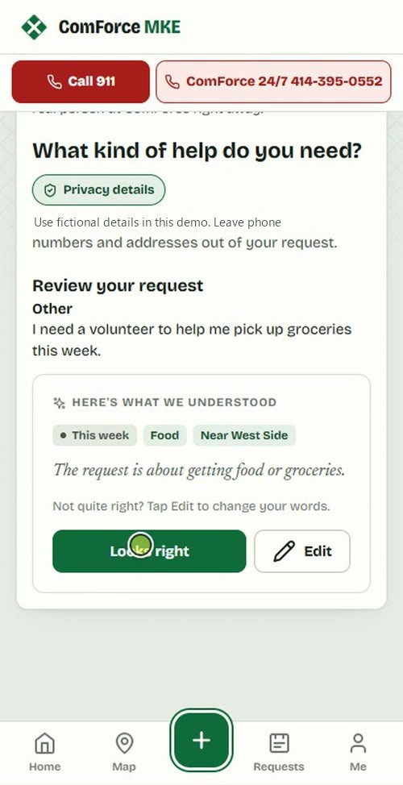
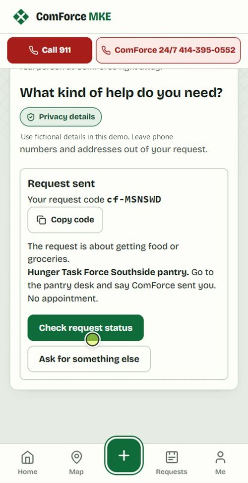
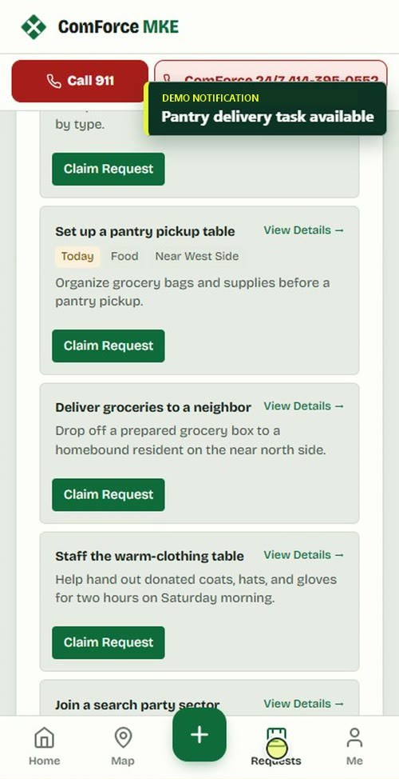
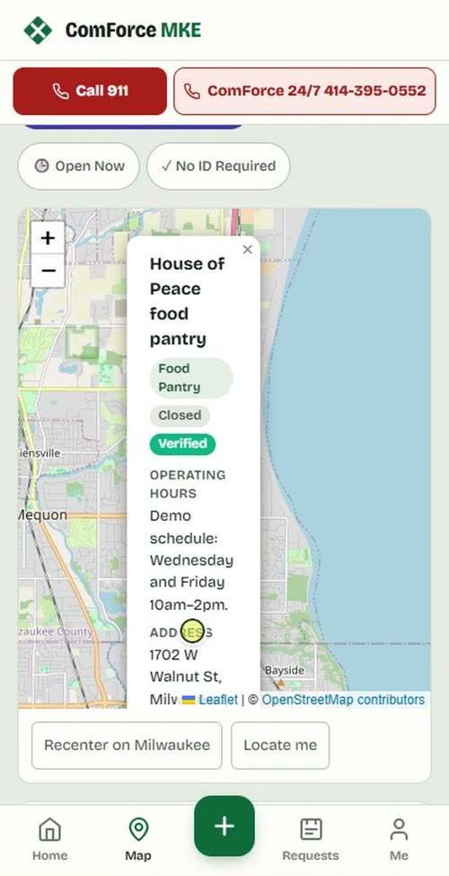

[One-sentence pitch: what ComForce MKE Hub is and who it serves.]
Team[Team name]Presented by[Names]
The problem
[Headline that names the problem.]
[00][What this number means]Source: [citation]
[00%][What this number means]Source: [citation]
[0 hrs][What this number means]Source: [citation]
Who it's for
[A person, a block, a need.]
[Describe the people the Hub serves and the moment they reach for it.]
UrgentAI matched
[Example request title]
[Why the AI surfaced this request for you.]
Take it[0.4 mi]
Today
[Second example request]
[Why it matched.]
Taken[by you]
What we learned & what we built
Help people can trust enough to ask for.
User needs: scattered forms and phone lines slow down help, and fear of exposing personal details keeps people from asking, so residents need anonymity.
Coordinator needs: staff need accountable access to tickets, moderation and inventory.
No mandatory account
No sign-up or password
Anonymous handles
Help starts instantly
PII scrubbing
Phones, addresses, emails removed
Applied before storage and AI
Separate coordinators
Key-protected workspace
Held posts stay private
DV shelters hidden from public inventory
How it works
[From request to resolved in four steps.]
1
[Step one]
[What happens and who does it.]
2
[Step two]
[What happens and who does it.]
3
[Step three]
[What happens and who does it.]
4
[Step four]
[What happens and who does it.]
Privacy by default: [one line on how personal details are protected.]
Demo
[What the screen shows.]
[Feature]: [why it matters]
[Feature]: [why it matters]
[Feature]: [why it matters]
comforce.mke/hub
[Screenshot 1600 × 1000]
Mobile demo
A help request in Milwaukee.
Open a community hubStart in Food Pantry & Mutual Aid.
Ask for helpSend a private request and save the tracking code.
Jev checks a hub postA demo verdict holds the related public post for staff review.
Connect with ComForce staffA demo alert leads a volunteer to a demo task and the staff relay.
Find a way to take part nearbyExplore Milwaukee’s resource map and join a demo search near 27th & Wisconsin.
Open the food pantry hubFood Pantry & Mutual Aid selected in the phone layout.

Review a private requestThe guided form summarizes the resident’s grocery pickup request before sending.

Save the tracking codeThe confirmation screen shows an anonymous request code.
Jev flags a public postA demo Jev verdict flags a possible deposit scam. The post is held for staff review.
Staff assigns the requestThe coordinator uses the dispatch queue to assign the private request.

The volunteer gets an alertA demo notification points the volunteer to a demo grocery delivery task.
The volunteer connects to staffClaiming the task unlocks a demo connection through the ComForce relay.

Find resources on the Milwaukee mapA pantry pin shows hours, an address, and walk-in information.
Join a nearby demo searchThe selected search sector shows the volunteer on its roster.